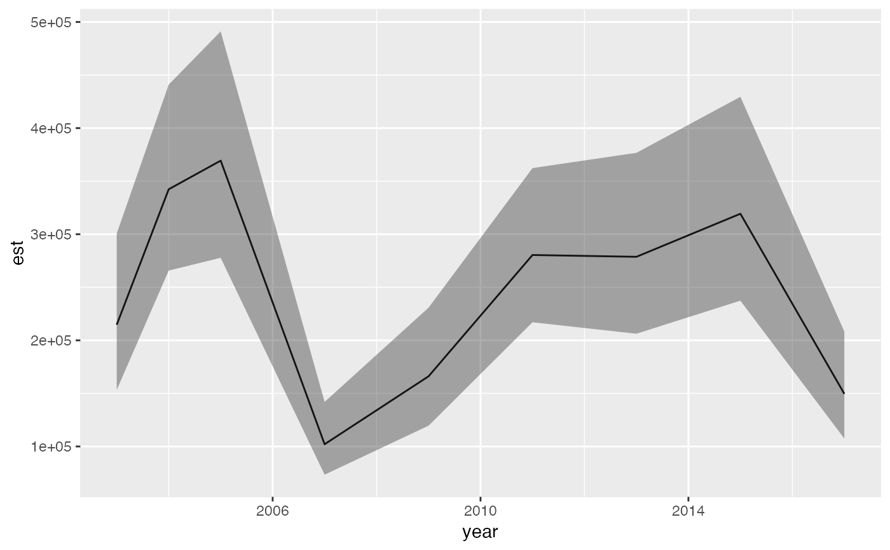

Extract a relative biomass/abundance index or a center of gravity
get_index(obj, bias_correct = FALSE, level = 0.95, ...) get_cog(obj, bias_correct = FALSE, level = 0.95, ...)
| obj | Output from |
|---|---|
| bias_correct | Should bias correction be implemented |
| level | The confidence level. |
| ... | Passed to |
# \donttest{ # Use a small number of knots for this example to make it fast: pcod_spde <- make_mesh(pcod, c("X", "Y"), n_knots = 60, type = "kmeans") m <- sdmTMB( data = pcod, formula = density ~ 0 + as.factor(year), time = "year", spde = pcod_spde, family = tweedie(link = "log") ) # Note `return_tmb_object = TRUE` and the prediction grid: predictions <- predict(m, newdata = qcs_grid, return_tmb_object = TRUE) ind <- get_index(predictions) library(ggplot2) ggplot(ind, aes(year, est)) + geom_line() + geom_ribbon(aes(ymin = lwr, ymax = upr), alpha = 0.4)cog <- get_cog(predictions) cog#> year est lwr upr se max_gradient bad_eig coord #> 1 2003 463.5260 446.4141 480.6380 8.730751 0.004276594 FALSE X #> 2 2004 476.7402 466.4506 487.0298 5.249898 0.004276594 FALSE X #> 3 2005 470.6887 457.7493 483.6281 6.601835 0.004276594 FALSE X #> 4 2007 480.8949 464.5560 497.2338 8.336336 0.004276594 FALSE X #> 5 2009 477.2028 457.9182 496.4874 9.839267 0.004276594 FALSE X #> 6 2011 470.5112 457.6004 483.4221 6.587303 0.004276594 FALSE X #> 7 2013 471.9877 455.6076 488.3677 8.357328 0.004276594 FALSE X #> 8 2015 463.0289 449.6441 476.4136 6.829060 0.004276594 FALSE X #> 9 2017 470.5220 455.4189 485.6251 7.705796 0.004276594 FALSE X #> 10 2003 5757.8611 5739.8545 5775.8677 9.187187 0.004276594 FALSE Y #> 11 2004 5732.5035 5720.8786 5744.1284 5.931175 0.004276594 FALSE Y #> 12 2005 5763.0315 5750.1526 5775.9105 6.571025 0.004276594 FALSE Y #> 13 2007 5738.2312 5716.8425 5759.6200 10.912838 0.004276594 FALSE Y #> 14 2009 5734.0287 5713.3605 5754.6970 10.545220 0.004276594 FALSE Y #> 15 2011 5747.1037 5733.6282 5760.5793 6.875406 0.004276594 FALSE Y #> 16 2013 5747.6447 5728.9691 5766.3204 9.528583 0.004276594 FALSE Y #> 17 2015 5753.9699 5736.8439 5771.0958 8.737907 0.004276594 FALSE Y #> 18 2017 5755.9729 5739.6443 5772.3016 8.331093 0.004276594 FALSE Y# }